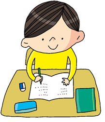
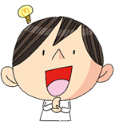
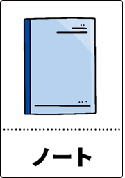
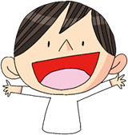

まるのおうちとは
子どもをまるごと受けとめる、
小さな居場所
まるのおうちは、子どもが「自分にまるをつけられる」時間を大切にしている学びの場です。
勉強が得意でも苦手でも、その子が感じた「できた」を一緒に見つけていきます。
少人数で、
そっと寄り添う学び
一人ひとりのペースに合わせて、ゆっくり・ていねいに進めます。
「わからない」を言いやすく、「できた」が自然に増えていくように、無理のない距離感で寄り添います。
安心して過ごせる空気づくり
まるのおうちは、勉強だけの場所ではありません。
気持ちが落ち着く、ほっとできる、そんな空気を大切にしています。
子どもたちが自分らしくいられる時間が流れています。
まるのおうちが
予約制である理由
まるのおうちは、予約制で運営しています。
それは、お子さんの“無理のないペース”で通えるようにしたいからです。
毎週決まった時間に通うのが難しい子や、その時期によって集中できる時間が変わる子もいます。
予約制にすることで、ご家庭の予定やお子さんの調子に合わせて、事前に通う日を柔軟に選べるようにしています。
こんな子に向いています
宿題をするのが苦手な子
学校の授業がちょっと難しく感じている子
自分の可能性を伸ばしたい子
（自主学習のやり方がわからない子、
もっと学びたい子）
（自主学習のやり方がわからない子、
もっと学びたい子）
まるのおうちの
学習スタイル
学習スタイル

ステップ①
まずは、自分の力で宿題に取り組んでみます。
できるところから手をつけて、「やってみよう」の気持ちを大切にします。
できるところから手をつけて、「やってみよう」の気持ちを大切にします。
▼
ステップ②
つまずいたところは、講師がそっと寄り添って教えます。
「ちょっと頑張ればできそうかも」と思えるように、無理のない背中の押し方で、できる一歩を一緒に見つけます。
「ちょっと頑張ればできそうかも」と思えるように、無理のない背中の押し方で、できる一歩を一緒に見つけます。
▼


ステップ③ 宿題が終わったあとは、同じ問題を解き直したり、自分で類題を考えて解いたりします。「やればできるんだ」という気持ちが、ゆっくり自分の中に育っていきます。
▼
ステップ④
授業の最後は、「できた！」という気持ちで終われます。
小さな成功を積み重ねて、自分にまるをつけられる時間になります。
小さな成功を積み重ねて、自分にまるをつけられる時間になります。


公式LINEでは、まるのおうちのことを
動画でもう少し詳しく紹介してるよ。
動画でもう少し詳しく紹介してるよ。